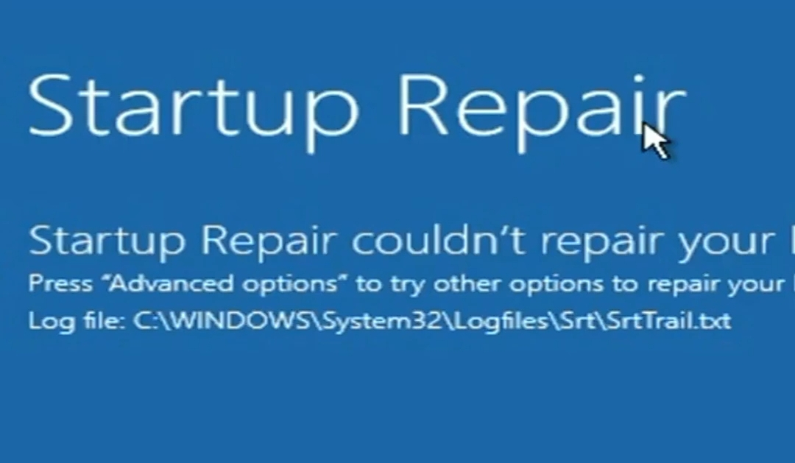

Click on Advanced Option > Troubleshoot > Advanced Option > Command Prompt.
Run these commands one by one:
chkdsk
sfc /scannow
bootrec /fixmbr
bootrec /rebuildbcd
exitAfter that, click on Continue. Your system should reboot automatically.